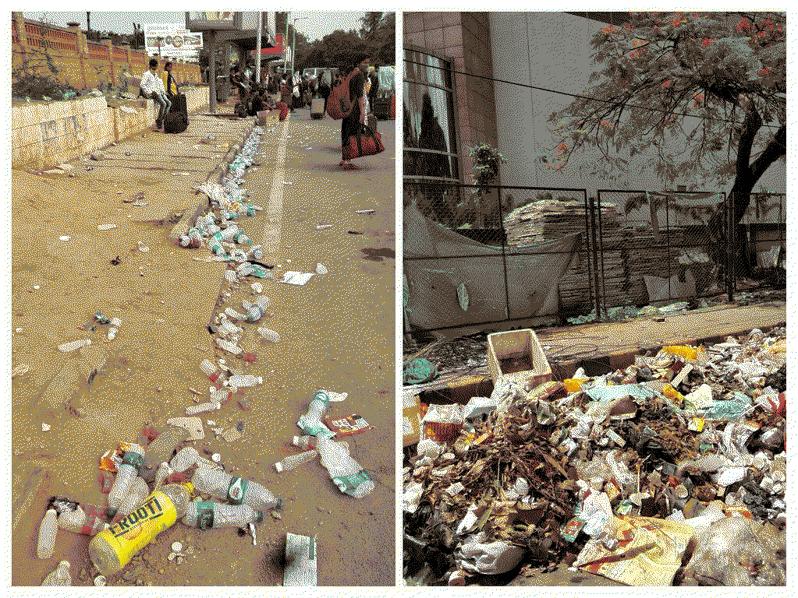

In the times when most human activities are motivated by immediate economic outcomes... this is a tiny effort to document sustainable measures relevant to eateries around the world! 🌿
Litter Litter Everywhere: Less than 10% of plastic gets recycled globally [1]. Everything else is around us, in the land or in the oceans, as harmful litter.

Huge carbon footprint: Most of the plastic (~99%) is made from chemicals sourced from fossil fuel manufacturing and contributes to emission of greenhouse gases at each stage of its lifecycle: extraction, transport, refining, managing waste and impact on air, water, and land when disposed of [2].
Air Pollution: More than 40% of the waste around the globe is simply incinerated [3]. When plastic is burnt, it results in emission of toxic gases such as dioxins, furans, mercury and polychlorinated biphenyls (BCP) polluting the air and posing a major health risk to all life. [4]
Health impact: Plastic is a health hazard at every stage of its lifecycle:
Extraction: Chemicals used for fracking fossil fuel to generate the raw material for plastic are known to have major health impacts including cancer, neurological, developmental, reproductive and immunity disorders.
Manufacturing: Processes to convert fossil fuel to plastic release carcinogens and other toxins in the air.
Consumer Usage: Use of plastic products leads to ingestion of microplastics and other toxins causing carcinogenic, developmental and endocrine-disrupting impacts.
Waste Management: All plastic waste management technologies (including incineration, co-incineration, gasification, and pyrolysis) result in the release of toxic metals, organic substances (dioxins and furans), acid gases to the air, water, and soils and impacting the health of workers and those living in the surrounding areas.
Waste in the Environment: Once plastic reaches the environment in the form of macro- or microplastics, it contaminates and accumulates in food chains through agricultural soils, terrestrial and aquatic food chains, and the water supply. This environmental plastic can easily leach toxic additives or concentrate toxins already in the environment, making them bioavailable again for direct or indirect human exposure. [5]
Plastic found in stomach contents of a dead albatross chick [Image Courtesy: Open.edu]
Plastic adds to toxic litter everywhere on our planet, has a huge carbon footprint and tremendous health hazards during each stage of its lifecycle. Single usage of the material for minor conveniences of human living is not worth the huge negative impact of the material on other species and the planet. 🌏
Observe the type of waste eateries around you most typically generate.
If you find a low waste eatery around you, appreciate them for what they do, that added boost will go a long way.
Eat fresh at home, as much as you can. Nothing beats the freshness, health, taste or eco-friendliness of home food.
If you cannot cook and eat, then dine-in at a nearby eatery instead of ordering a takeout.
If takeout is a must, then take your own containers along.
If none of the above, then try to order food which can be packed in natural biodegradable materials, and insist on that being the case. Say a firm no to disposable plastic cutlery.
Yet if none of the above, then just wash the disposables, and try to reuse them. Or keep them in your sight to avoid more waste going forward.
🍀 This is an open-source project. If you would like to
collaborate on the work, reach out on the project’s github page.
If you have any feedback or comments, then say hi to Nirzaree at
nirzaree[dot]svnit[at]gmail[dot]com 🍀